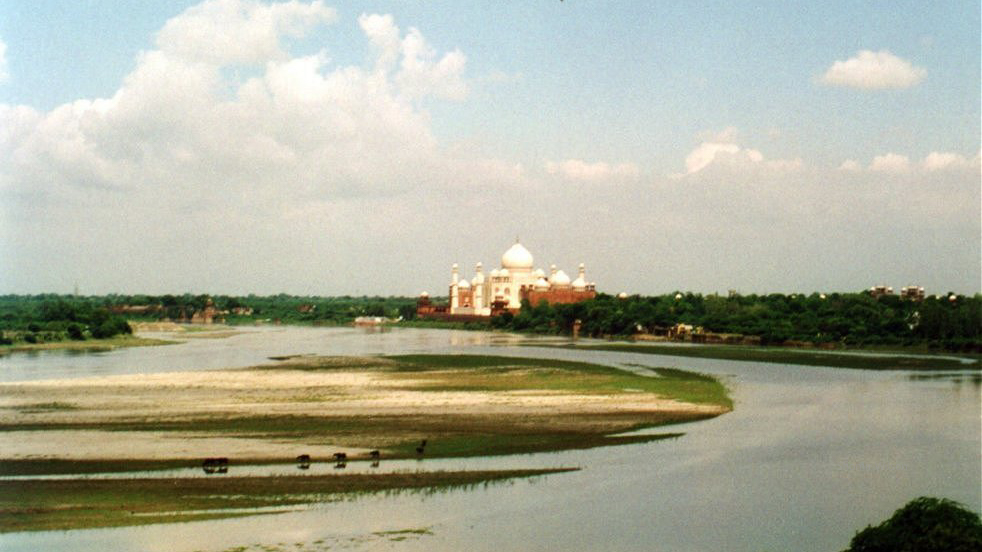

This page is part of Travel and Meaning and my advice pages.

Travel enables the work of academia in many ways. The earliest universities in recorded history motivated people to make perilous journeys to visit them, attracted by word of mouth and letters handwritten in ink. Now the internet allows faster and more flexible communication, but communication hasn't replaced the significance of place to the personal growth often expected from college or graduate degrees, or its importance to teamwork and the creation of knowledge. Modern universities, as well as their contributions to workforce development and human knowledge, depend upon the movement of people.
Undergraduate students who participate in study abroad experiences often describe them as life-changing and pivotal for how they understand the world, including their own respective cultures. At the postgraduate level, attending a university outside of one's home country is common, to the extent that in many STEM PhD programs at US universities a majority of the students come from outside the country. The universities where graduate students study, and the countries that host those universities, receive the benefits of their research. When immigrant alumni are allowed to remain after graduation and to take jobs, the hosting country benefits economically for years to come.
Research is the creation of knowledge, and modern research is a collaborative activity. Within computing and information science—my discipline—the "research community" is understood to be international in scope. Top-tier research conferences draw attendees from around the world to share findings and learn about others' work, and many of these conferences change locations every year. Large collaborative research projects utilize expertise across multiple universities, and periodic in-person meetings often facilitate idea generation and teamwork. In-person meetings also build social rapport among collaborators, which becomes valuable when obstacles inevitably arise. Individual faculty sometimes spend extended periods of time at universities abroad to work on special projects or gain new skills.
The academic job market is also an international ecosystem. Many STEM faculty at US universities were born in other countries and originally came to the US for graduate school. Too few US-born people want to pursue PhDs or faculty positions afterward, and US universities rely on recent immigrant-PhDs to teach and perform research. International faculty become de facto citizen ambassadors for their home countries, sharing about their backgrounds while interacting with colleagues and speaking with students.
My experiences with travel might be unusual in scope and duration, but many graduate students travel to study or to present their work at conferences, and many faculty travel as part of their work. I've written partly on their behalf, to demystify academia for people outside it or new to it. There's also a duality to the experiences I've described: they have personal meaning to me at the same time many of them connect to my work, first as a student researcher and then as a professor. Allowing students and faculty to travel enables learning and research, contributing to human progress.
Return to the Table of Contents.